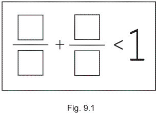
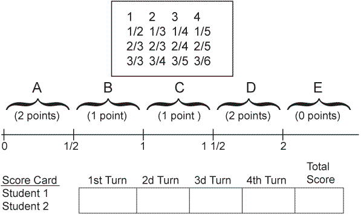

|
|||||
|
Estimation
and Children's Concept
of Rational Number Size |
|||||
|
Merlyn
J. Behr |
|||||
|
What is it that children need to know about fractions in order to estimate them? What misunderstandings are represented, for example, by the fact that only 24 percent of the nation's thirteen-year-olds were able to correctly "estimate" 12/13 + 7/8 by selecting the correct answer from among 1, 2, 19, 21 (Post 1981)? The popular choices of 19 and 21 (chosen by 28 percent and 27 percent, respectively) certainly suggest that many children do not understand that l2/13 and 7/8 are each close in size to 1. In our view, this example suggests that success in estimating 12/13 + 7/ 8 depends on an understanding of the size of the respective rational numbers. We take the position in this article that an understanding of the size of numbers - whole numbers, fractions, decimals - is essential to the ability to find estimates for them. We also believe that estimation can be used to develop an understanding of number size. In a general sense, in order for a thing to have the attribute of size, it must be conceptualized as a single entity. To speak of the size of a pile of pennies, for example, suggests that the pile is conceived as one entity. Do children understand a fraction as a single entity or as two separate numbers? A fraction symbol is composed of two whole-number symbols - the numerator and the denominator. For a child to understand a rational number as one entity, the ability to coordinate the meaning of these symbols is required. To determine the size of a rational number requires an understanding of the relationship between the numerator and denominator. The numerator, the denominator, and the relationship between them must all three be coordinated in order to estimate correctly or understand the size of a given rational number. Many children do not coordinate these three ideas but handle numerators and denominators separately. This is strongly suggested by the fact, noted earlier, that 55 percent of thirteen-year-olds selected either 19 or 21 (the sum of the numerators and denominators, respectively) as an estimate for 12/13 + 7/8. This article will discuss in detail two rational number estimation tasks and clarify the thinking strategies used by children as they complete them. The article will also suggest other activities that will promote children's ability to estimate and understand the size of rational numbers. TWO TASKS FROM RESEARCH The information that we present here about children's strategies in dealing with rational numbers emanates from experimental work of the Rational Number Project (see Behr, Wachsmuth, Post, and Lesh [1984] for details). Fourth- and fifth-grade children exhibited these strategies during thirty weeks of project teaching experiments. The instruction emphasized the use of manipulative aids and considered five topics: naming fractions, identifying and generating fractions, comparing fractions, adding fractions, and multiplying fractions. Each child was individually interviewed on eleven separate occasions. The interviews were conducted approximately every eight days during the thirty-week instructional period. Each interview was audio- or video-recorded and later transcribed. The two tasks from the project that will be discussed in this article are concerned with comparing fractions and adding fractions, respectively. Order and Equivalence The estimation of a fraction has to do with the notion of the closeness of one number to another. Related to this notion is the question of whether two fractions are equal, and if not, which one is less. During interviews we asked children to order (decide which is greater) fractions of three basic types: same-numerator fractions, same-denominator fractions, and fractions with different numerators and denominators. Our analysis suggested that five or six different strategies were used by children for each of the three types of conditions. The majority of these were valid and in some way recognized the relative contributions of both numerator and denominator to the overall size of the fraction. In some situations, however, children focused only on the numerator or only on the denominator and as a result made incorrect conclusions. In other instances they compared each to a common third number (usually 1/2 or 1) and were successful in ordering the given fractions. For example, 2/5 is less than 5/8 because 2/5 is less than 1/2 and 5/8 is greater than 1/2." Even after extensive instruction, some children were at times negatively influenced by their knowledge of whole-number arithmetic and as a result reached inappropriate conclusions. For example, " 1/17 is less than 1/20 because 17 Is less than 20." We called this strategy whole-number dominance. The least successful students on these tasks were those that had difficulty coordinating numerators and denominators. Apparently they had difficulty with these multiple relationships or were unable to remember them long enough to make a decision about the original question. The nature of this difficulty becomes apparent when one attempts to order 5/8 and 3/5 without using some type of abstract algorithm or reference to a manipulative aid to reduce reliance on memory alone. (Try it and see!) We also found that children's ability to deal with order and equivalence declines further when "difficult" fractions are used and when the ordering task is embedded in a verbal problem-solving situation. It seems reasonable to assert that it is not possible to estimate satisfactorily the sum, product, difference, or quotient of two rational numbers unless one has the ability to determine the relative size of two or more rational numbers. It is essential, therefore, that students understand this basic concept of relative size before they can be expected to estimate rational numbers accurately and with an acceptable degree of understanding. As the results from this task show, many students do not have a good understanding of relative size and often use incorrect strategies. Construct-a-Sum The task construct-a-sum was given to sixteen children midway through grade 5. These children were subjects in teaching experiments of the Rational Number Project during their grade 4 and grade 5 years (Behr, Wachsmuth, and Post 1985). The first of two versions of this task consisted of numeral cards on which the whole numbers 1, 3, 4, 5, 6, 7 were written and a form board as shown in figure 9. 1. |
|||||
|
 |
|||||
|
The second version used the same form board but numeral cards with 11, 3, 4, 5, 6, 7. Version 1 was presented about five-sixths of the way into the children's grade 5 year; the second version was presented shortly thereafter. In each instance, the children were directed to place numeral cards inside the boxes to make two fractions that when added are as close to 1 as possible but not equal to 1. To discourage the use of computational algorithms, subjects were encouraged to estimate, and a time limit of one minute was imposed. After completing the task, subjects were asked to "tell me how you thought when solving this problem." From children's explanations, responses were partitioned into five categories plus an "other category." These categories suggest cognitive strategies that children used to perform the task. Especially observable in the responses is the variation in the subjects' use of estimation, fraction order and equivalence concepts, and reliance on a correct or incorrect computational algorithm. The various strategies are described below. Correct reference point comparison. Responses in this category reflect a successful attempt to estimate the constructed rational number sum by using 1/2, 1, or some other self-constructed fraction as a point of reference. The spontaneous use of fraction equivalence and rational number order is evident. The following interview excerpt is illustrative: Bert: [Using 1, 3, 4, 5, 6, 7, he makes 3/6 + []/[], pauses, thinks, changes to 4/6 + []/[] and finally to 5/6 + 1/7.] Interviewer: Tell me how you thought about the problem. Bert: Well, umm..., 5/6 is ... well, a sixth is larger than the seventh, and so there [i.e., 5/6] is one piece away from the unit covered, a seventh is smaller, so a seventh can fit in there [i.e., between 5/6 and the whole] without covering the whole. Mental algorithmic computation. Explanations of student responses indicate here that the subject used mental computation to carry out a correct standard algorithm (e.g., common denominator) to determine the actual sum of the generated fractions. The spontaneous use of fraction equivalence and rational number order is also evident in this category of responses. Kristy: [Using 1, 3, 4, 5, 6, 7, she makes 1/3 to []/4, then changes to 1/3 + 4/5.] If you find the common denominator, twelve. But [referring to 1/3 + []/4]..., and then four times one would be four [changing 1/3 to 4/12]. But then [explaining the change of []/4 to 4/5) three times ... I didn't have a two or anything [among the number cards given and remaining], and I used up my three, so.... Observe what Kristy is apparently doing: 1/3 is equivalent to 4/12. How many more twelfths are necessary to get close to one? This is determined from []/4 or 3 x []/12; so realizing that she has only 5, 6, or 7 to choose for the box, which in turn give 15/12, 18/12, and 21/12 - too many twelfths - she changes []/4 to []/5 and now must do the same type of thinking with fifteenths. Incorrect reference point comparison. Students' explanations of their responses in this category indicate that they attempted to estimate the constructed rational number sum by using 1/2, 1, or some other self-constructed fraction as a point of reference. Little understanding of fraction equivalence and rational number order was evident. Mental algorithmic computation based on an incorrect algorithm. Responses indicate that the subject used mental computation based on an incorrect algorithm to compute the actual sum. Ted: [From 1, 3, 4, 5, 6, 7, he made 5/6 + 4/7.] Well, first I thought, I tried to figure out what would come closest to 1, and I found out that 5/6 and 4/7 would come the closest. . .'cause I used the top number ... (if I added them) 9/13. Gross estimate. Explanations here suggest that the subject made a gross estimate of each rational number addend but did not make a comparison to a standard reference point and did not use fraction equivalence or rational number ordering. Ted: [From 1,3,4,5,6,7, he makes 3/11 and 4/7.] I wanted to use up the little pieces from the top ... then use the highest number of pieces from the bottom.... We were somewhat surprised to find a large percentage of the responses given by these children late in grade 5 to be incorrect. A large percentage of the responses (20 of 41, or 49%) suggested a processing of fraction addition that showed little understanding of fraction size. At times they suggested mental application of an incorrect algorithm, such as adding numerators and denominators. Children who gave these responses were in the middle or low range of mathematical ability. Correct responses were given mostly by children with average and above-average ability in mathematics. OTHER TASKS AND TEACHING STRATEGIES We believe that it is important to help children develop a concept of the size of rational numbers. This requires that they be able to view fractions as single entities and as numbers in and of themselves. When this concept has been internalized, it will then be possible to help children develop an ability to estimate the size of rational numbers. As skill is developed in estimating rational numbers, it feeds back to improve a child's concept of rational number size. Thus, the concept of rational number and skill in estimation can be developed in such a way that they go hand in hand and facilitate each other. Practice on the tasks we present and on similar tasks will improve children's ability to do the construct-a-sum task and to estimate the result of operations on numbers; for example, to estimate 12/13 + 7/8. We present the first of these in the context of a possible dialogue between teacher and class. Although the dialogue is somewhat "idealized," it does demonstrate situations that are likely to surface in discussions with children. Activity 1: How close can you get to 1? Objective: To help children observe how changing numerators or denominators or numerator-denominator pairs causes a change in the size of the fraction. Teacher: Can you name a fraction that is close to 1? S1: Three-fifths. Teacher: That's close to 1; how close is it? S2: It's 2/5 close. Teacher: Well, then, can you give a fraction that is closer to 1? S2: I think 4/5 would be closer. Because 4/5 is only 1/5 away. This response required only a numerator change. Sometimes it might be necessary for the teacher to give the first fraction in order for certain observations to be possible. Teacher: Is it possible to get even closer to 1? S3: It's harder now, but I think 5/6 is only one away from 1 [i.e., 1/6 away from I], and 1/6 is less than 1/5, so 5/6 should be closer to 1 than 4/5. (Ten-year-old Kathy suggested this approach.) As children gain skill, these answers are not atypical. Observe the number of things that must be remembered to give a response like Kathy's!
Kathy's solution is an impressive mental feat when viewed from this perspective. From this activity, and practice on many more items, the child gains familiarity with the relation between fraction size and changes in the numerator, the denominator, or both. An especially important observation is that when the numerator increases and the denominator decreases, the fraction increases rapidly. Likewise, the fraction decreases in size when the numerator decreases and the denominator increases. Children pick up the notion of "one part away from" (that is, one unit fraction away from) rather quickly. With practice it can be a powerful means of getting fractions close to (and closer to) a given number. The task can be varied with challenges such as these: (a) Name a fraction very close to 1; (b) name a fraction so close to 1 that you think no one could give one closer (this second question leads to the observation that you can keep giving fractions that are increasing in size yet never get a fraction as great as 1); and (c) name a fraction so close to 0 that you think no one could give one closer (this leads to the observation that there are smaller and smaller positive rational numbers). Some rather profound mathematics comes up in a natural way. Other variations are possible by changing the reference number 1 to other "usable," "comfortable," and "handleable" numbers, such as 1/2, 1/3, 3/4, 2/3, 2, and 2 1/2. Variations on the Theme Activity 2:
Get close, and closer, to 1, staying above 1. Activity 3:
Get close, and closer, to 1, while alternating above and below 1. Another series of related estimation activities requires children to produce or approximate a target number by manipulating some set of rational numbers. For example: Activity 4: Given set A ={1/2,1/3,1/4,1/5,1/6,1/7 .... }, get close (and closer) to the target number (3/4, for example), using three numbers from set A and the operation of addition (or any combination of operations; or four numbers; or five numbers, etc.). Obviously the makeup of set A, the target number, and the task conditions can be manipulated to serve related goals. Activity 5: From the set B = {1/2, 1/3, 2/3, 1/4, 2/4, 3/4, 1/5, 2/5, 3/5, 4/5}, try to construct given target numbers (1 1/12, for example). Use as few (or as many) numbers from set B as you can. Numbers can (or cannot) be used more than once. Activity 6: A variation on activity 5: This activity is for two players. Each selects two fractions or whole numbers from the board below. They then add, subtract, multiply, or divide those two fractions. The score is determined by locating the interval on the number line within which the new fraction resides and awarding points as indicated. Four turns by each player constitutes a game. Three points are awarded if the numbers 0, 1/2, 1, 1 1/2, or 2 are "hit" exactly. |
|||||
|
 |
|||||
| The entries on the
fraction board, the dimensions of the number line, and the point allocations
can be manipulated to suit the objectives under consideration. When a constraint
is placed on the amount of time that a child can have to produce an answer,
an estimation of the size of the sum is required. The estimation of a sum
depends on good estimates of the addends.
Activity 7: Fraction estimation with a calculator. Several calculators are now available with a fraction mode. The Casio fx350 Scientific Calculator is one of these. At this writing, it is available for less than $15. The fx350 uses a small bracket to denote the fraction slash or bar. Thus l÷2 is interpreted as 1/2, and 1÷2÷5 means 1 and 2/5. Fraction-to-decimal conversions are available with a single additional depression of the fraction key. If you have access to this or a similar calculator, your students will benefit from the following activity. Once again the student is asked to hit the target. Step 1: Student A enters a number in the calculator. This can be an integer, a fraction, or a mixed number (you may wish to place limits on this number initially). Student A then identifies a target area or region, for example, between 20 or 30; or you may wish to do this at first. Student A then passes the calculator to student B. Step 2: Student B must now push the add, subtract, multiply, or divide key and enter any number in fraction form, for example, 1/2, 4/2, 13/5, and so forth. Student B will then push the = key. If the number appearing on the display is within the target area, student B earns one point. If not, the calculator is passed back to student A as is, and student A must attempt to reach the target area using the same procedure. This continues until the target is reached. Here is a sample game:
The authors have used this latter activity with in-service elementary teachers and have found the game to be "nontrivial." Even mathematically sophisticated professionals can gain important insights into estimation processes and rational number understandings by participating in these deceptively simple activities. CONCLUSION Many of the activities that were suggested here to develop estimation skills with rational numbers are similar in format to those that would have been appropriate in the development of whole-number estimation skills. This is an economical situation in that it enables you to easily adapt estimation activities that are already in your repertoire. Over the years, NCTM publications have provided many other such suggestions, and many more are included in other articles in this yearbook. Our research indicates
that the learning of rational number concepts is more complex than we
originally thought and is in fact very difficult for many children. One
of the main areas of need is to help children think about fractions as
numbers in their own right and not only as parts of a whole, as ratios,
or as the quotient of two integers. The activities suggested here all
emphasize the concept of rational number size, stressing that fractions
are themselves single numbers. Estimation is an excellent vehicle for
developing this concept. In fact, we have seen the mutually supportive
roles played by estimation with rational numbers and the concept of rational
number size. REFERENCES Behr, Merlyn J., Ipke Wachsmuth, and Thomas R. Post. "Construct a Sum: A Measure of Children's Understanding of Fraction Size." Journal for Research in Mathematics Education 16 (March 1985):120-31. Behr, Merlyn J., Ipke Wachsmuth, Thomas R. Post, and Richard Lesh. "Order and Equivalence of Rational Numbers: A Clinical Teaching Experiment." Journal for Research in Mathematics Education 15 (November 1984):323-41. Post, Thomas R. "Fractions:
Results and Implications from National Assessment." Arithmetic Teacher
28 (May 1981):26-31. (top) |
|||||